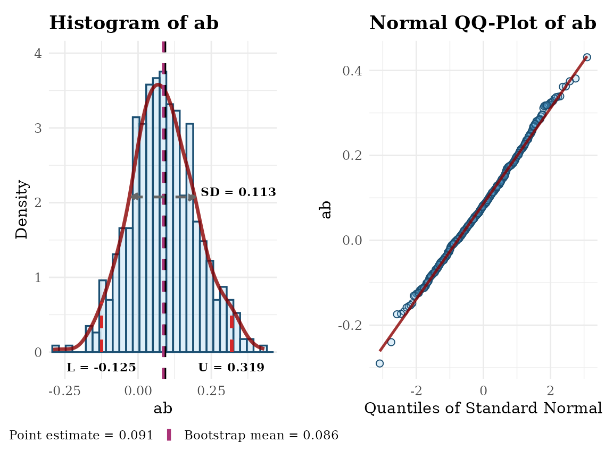
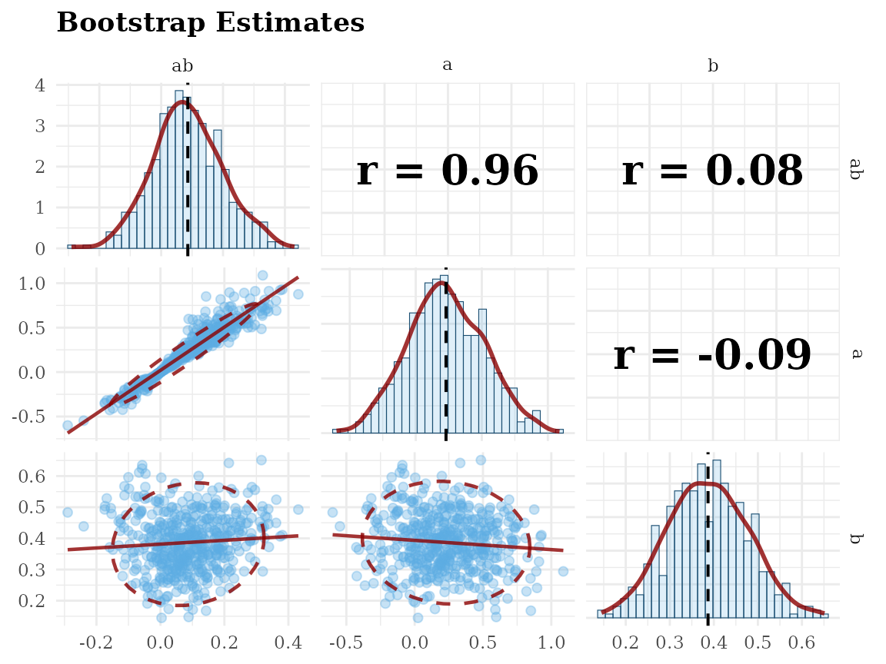
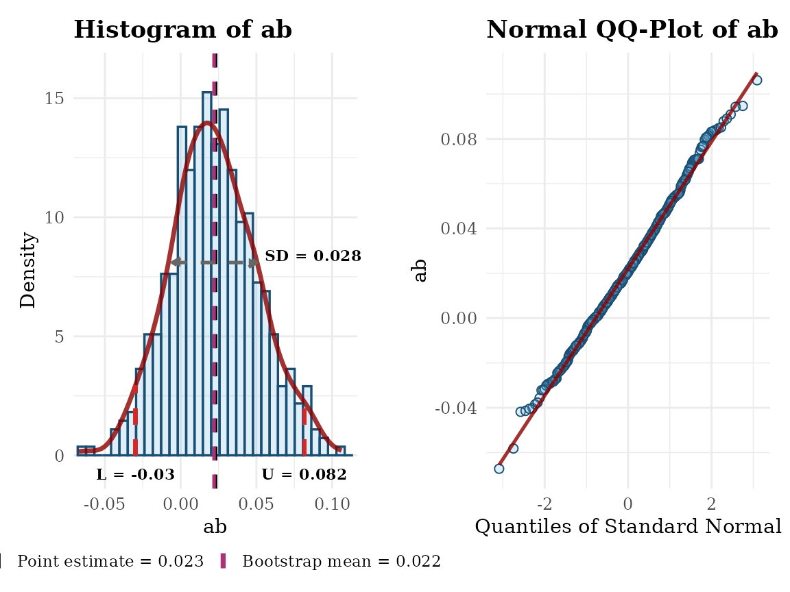
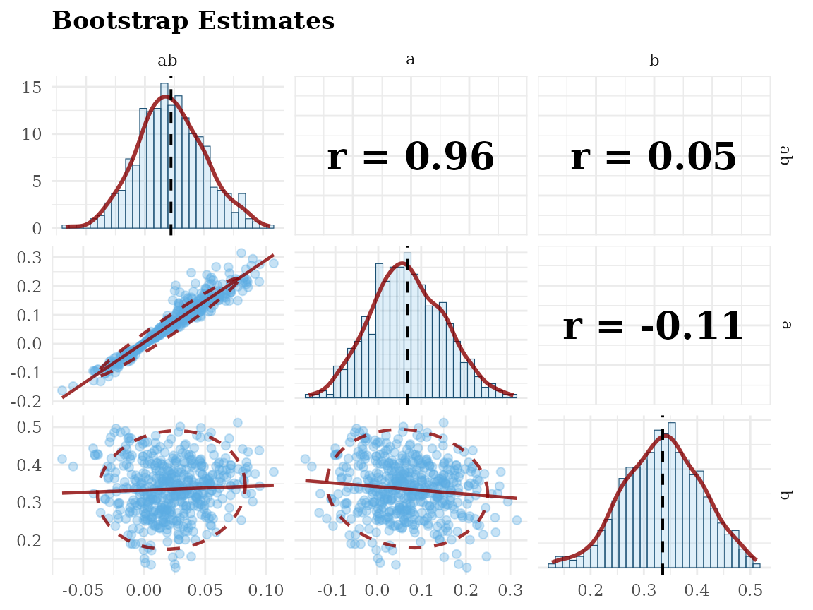

gg_hist_qq_boot_and_gg_scatter_boot
Source:vignettes/gg_hist_qq_boot_and_gg_scatter_boot.Rmd
gg_hist_qq_boot_and_gg_scatter_boot.RmdOverview
This vignette demonstrates two ggplot2-based utilities
for visualizing bootstrap estimates stored/returned by semboottools
(Yang &
Cheung, 2026):
-
gg_hist_qq_boot(): modular histogram/density with optional confidence intervals (CIs), mean/boot-mean lines, SD arrow, and a side-by-side QQ plot. -
gg_scatter_boot(): a scatterplot matrix (via GGally) for multiple parameters’ bootstrap draws.
Compared to base plots, these functions are modern
(ggplot2) and modular (optional layers), and
can return the ggplot objects for further
customization.
The following packages will be used:
library(semboottools)
library(lavaan)
#> This is lavaan 0.6-21
#> lavaan is FREE software! Please report any bugs.Example
library(lavaan)
# Simulate data
set.seed(1234)
n <- 200
x <- runif(n) - 0.5
m <- 0.4 * x + rnorm(n)
y <- 0.3 * m + rnorm(n)
dat <- data.frame(x, m, y)
# Specify model
model <- '
m ~ a * x
y ~ b * m + cp * x
ab := a * b
'
# Fit model
fit0 <- sem(model, data = dat, fixed.x = FALSE)
# Store bootstrap draws
# `R`, the number of bootstrap samples, should be ≥2000 in real studies.
# `parallel` should be used unless fitting the model is fast.
# Set `ncpus` to a larger value or omit it in real studies.
# `iseed` is set to make the results reproducible.
fit2 <- store_boot(
fit0,
R = 500,
iseed = 2345,
parallel = "snow",
ncpus = 2)Basic Usage: Default Settings
Visualizing the bootstrap estimates for the unstandardized solution:
gg_hist_qq_boot(fit2,
param = "ab",
standardized = FALSE)
#> Warning: Removed 2 rows containing missing values or values outside the scale range
#> (`geom_bar()`).
gg_scatter_boot(fit2,
param = c("ab", "a", "b"),
standardized = FALSE)
Visualizing the bootstrap estimates for the standardized solution:
gg_hist_qq_boot(fit2,
param = "ab",
standardized = TRUE)
#> Warning: Removed 2 rows containing missing values or values outside the scale range
#> (`geom_bar()`).
gg_scatter_boot(fit2,
param = c("ab", "a", "b"),
standardized = TRUE)
Reference(s)
Yang, W., & Cheung, S. F. (2026). Forming bootstrap confidence
intervals and examining bootstrap distributions of standardized
coefficients in structural equation modelling: A simplified
workflow using the R package semboottools. Behavior
Research Methods, 58(2), 38. https://doi.org/10.3758/s13428-025-02911-z